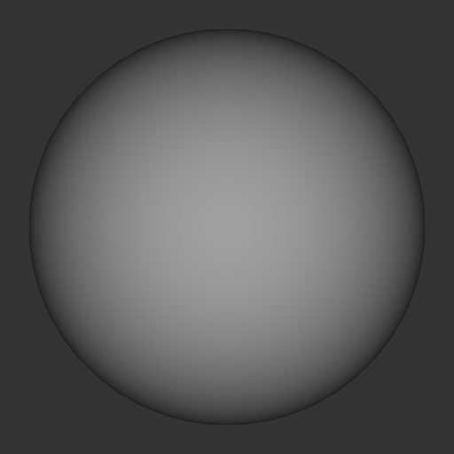
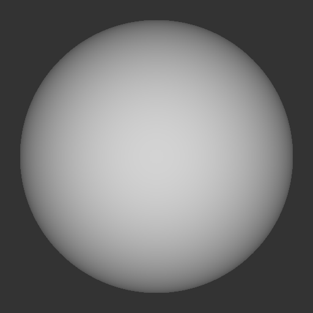
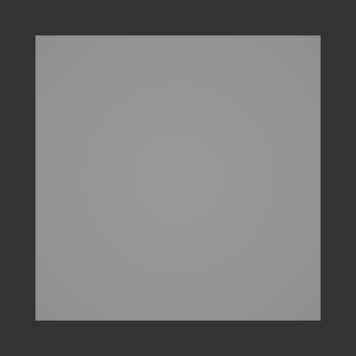
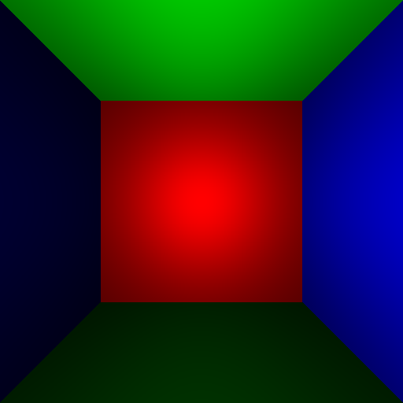
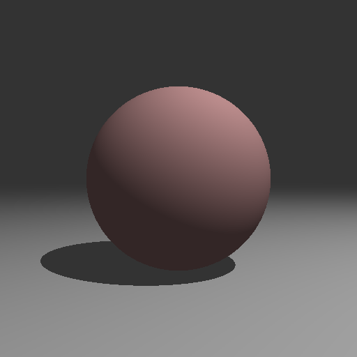
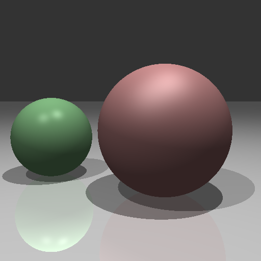
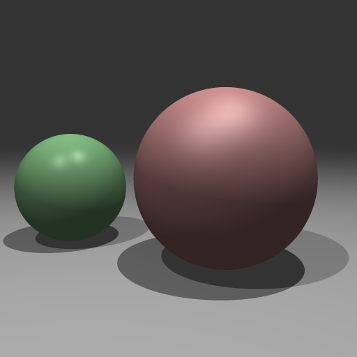
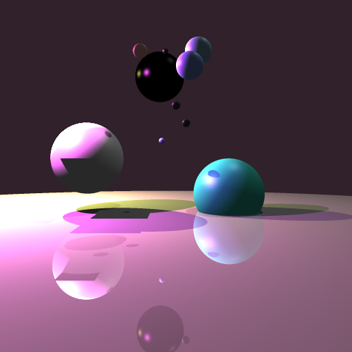

**P02_Raytrace**
COS350 Computer Graphics
Date: 11/17/22
Written by Bryce Nesius
P02_Raytrace
==============================================================
examples of outputs from this project:
P02_01_sphere

P02_02_sphere_ambient

P02_03_quad

P02_04_quad_room

P02_05_ball_on_plane

P02_06_balls_on_plane
P02_07_reflections

P02_08_antialiasing

P02_10_creativity_wow (creative artifact)

P02_Raytrace is a project on programming what pixels need to be switched on to what color in order
to render scenes with lighting, intersections, and antialiasing. It consists of several parts which
will be discussed more in-depth below.
**format: Name (function in P02_Raytrace.v file)**
Basic Raytracing (raytrace)
--------------------------------------------------------------
the raytrace function is the function where most the camera view and other metadata is loaded from the scene.json file. Then raytrace() determines
where to sample in each pixel and calls irradiance to get the color value to display for each pixel. The center is the coordinates of the center of
a single pixel. Antialiasing logic will also be applied in this function (see **antialiasing**.
Here is the basic implementation for a raytracer without antialiasing:
~~~~~~~~~~~~~~~~~~~~~~~~~~~~~~~~~~~~~~~~~~~~~~ vlang
fn raytrace(scene Scene) Image {
else {
for row in 0 .. h {
for col in 0 .. w {
u := f64(col + 0.5) / f64(w)
v := f64(row + 0.5) / f64(h)
q := scene.camera.frame.o.add(
scene.camera.frame.x.scale((u - 0.5) * scene.camera.sensor.size.width)
).add(
scene.camera.frame.y.scale(-(v - 0.5) * scene.camera.sensor.size.height)
).sub(
scene.camera.frame.z.scale(scene.camera.sensor.distance)
)
// create a ray that passes from the focal point of the camera to the scene
ray := scene.camera.frame.o.ray_through(q)
// then we determine what color to make that pixel with 'irradiance'
image.set_xy(col, row, irradiance(scene, ray))
}
}
}
return image
}
~~~~~~~~~~~~~~~~~~~~~~~~~~~~~~~~~~~~~~~~~~~~~~
Ray-Scene Intersection (intersect_ray_scene)
--------------------------------------------------------------
intersect_ray_scene is a function for simply returning if there is an intersection at a particular point. It determines where the ray
intersects with an object or returns miss() if there is none. I had to take into account that there is both a positive and negative value
possible, so to ensure I only take into consideration the first intersection, which would be the visible one, I include a variable for keeping track of the
closer intersection and returning that one.
~~~~~~~~~~~~~~~~~~~~~~~~~~~~~~~~~~~~~~~~~~~~~~ vlang
fn intersect_ray_scene(scene Scene, ray Ray) Intersection {
mut closest := gfx.no_intersection // type is Intersection
for surface in scene.surfaces {
intersection := intersect_ray_surface(surface, ray)
if intersection.miss() {
continue
return intersection
}
if closest.is_closer(intersection) {
continue
}
closest = intersection
}
return closest // return closest intersection
}
~~~~~~~~~~~~~~~~~~~~~~~~~~~~~~~~~~~~~~~~~~~~~~
Ray-surface Intersection (intersect_ray_surface)
--------------------------------------------------------------
In order to render a shape, we have to know what shape is being rendered to use the appropriate algorithm/function. This function matches
to another function that will render the appropriate shape. So far I only have implementations for Spheres and Quads(planes).
~~~~~~~~~~~~~~~~~~~~~~~~~~~~~~~~~~~~~~~~~~~~~~ vlang
fn intersect_ray_surface(surface Surface, ray Ray) Intersection {
match surface.shape {
.sphere { return intersect_ray_sphere(surface, ray) }
.quad { return intersect_ray_quad(surface, ray) }
}
}
~~~~~~~~~~~~~~~~~~~~~~~~~~~~~~~~~~~~~~~~~~~~~~
intersect_ray_sphere:
~~~~~~~~~~~~~~~~~~~~~~~~~~~~~~~~~~~~~~~~~~~~~~ vlang
fn intersect_ray_sphere(surface Surface, ray Ray) Intersection {
a := 1.0
e := ray.e
ctr := surface.frame.o
r := surface.radius
ec := Vector{ x: e.x - ctr.x, y: e.y - ctr.y, z: e.z - ctr.z }
b := 2.0 * ray.d.dot(ec)
c := ec.length_squared() - (r * r)
d := (b * b) - (4.0 * a * c)
mut t := (-b - math.sqrt(d)) / 2.0
p := ray.at(t)
n := ctr.direction_to(p)
// if surface is a quad, else it is treated as a sphere
if t < ray.t_min {
t = (-b + math.sqrt(d)) / 2.0
}
if t > ray.t_max || t < ray.t_min {
return gfx.no_intersection
}
if d < 0 {
// ray did not intersect sphere
return gfx.no_intersection
}
return Intersection{
distance: t,
frame: gfx.frame_oz( p, n),
surface: surface
}
}
~~~~~~~~~~~~~~~~~~~~~~~~~~~~~~~~~~~~~~~~~~~~~~
intersect_ray_quad:
~~~~~~~~~~~~~~~~~~~~~~~~~~~~~~~~~~~~~~~~~~~~~~ vlang
fn intersect_ray_quad(surface Surface, ray Ray) Intersection {
ctr := surface.frame.o
radius := surface.radius
c := surface.frame.o
e := ray.e
d := ray.d
n := surface.frame.z
t := e.vector_to(c).dot(n) / d.dot(n)
if t > ray.t_max || t < ray.t_min {
return gfx.no_intersection
}
p := ray.at(t)
distance := ctr.vector_to(p)
if math.abs(distance.x) > radius || math.abs(distance.y) > radius || math.abs(distance.z) > radius {
return gfx.no_intersection
}
return Intersection{
frame: gfx.frame_oz(p, n),
surface: surface,
distance: t
}
}
~~~~~~~~~~~~~~~~~~~~~~~~~~~~~~~~~~~~~~~~~~~~~~
Irradiance - Compute Color (irradiance)
--------------------------------------------------------------
The irradiance function is what determines and returns what color value a particular pixel should be. In order to compensate and factor in
some other aspects of the scene, irradiance takes into account different conditional checks and accumulates an average color for each pixel.
For example, after determining the accumulated color of a pixel via various algorithms/equations, if it passes the conditional then
refraction may be added into the average color, or ambient light, or even reflection. Irradiance also takes into account the material properties of
the object that is being intersected with. This way we can plug those values into different algorithms and changes the diffusion of light amongst other
values, based on the surface's material properties.
Light Diffusion Model Used: *Blinn-Phong*
- Blinn-Phong
This excerpt of code is from irradiance and is the Blinn-Phong component/calculation to get specular light effects.
~~~~~~~~~~~~~~~~~~~~~~~~~~~~~~~~~~~~~~~~~~~~~~ vlang
accum.add_in(
light_response.mult(
kd.add(ks.scale(math.pow(math.max(0.0, normal.dot(h)), n)))
).scale(math.abs(normal.dot(light_direction)))
)
~~~~~~~~~~~~~~~~~~~~~~~~~~~~~~~~~~~~~~~~~~~~~~
~~~~~~~~~~~~~~~~~~~~~~~~~~~~~~~~~~~~~~~~~~~~~~ vlang
fn irradiance(scene Scene, ray Ray) Color {
mut accum := gfx.black
intersection := intersect_ray_scene(scene, ray)
if intersection.miss() {
return scene.background_color
}
normal := intersection.frame.z
kd := intersection.surface.material.kd
kt := intersection.surface.material.kt
ks := intersection.surface.material.ks
n := intersection.surface.material.n
kr := intersection.surface.material.kr
v_direction := ray.d.negate()
r := v_direction.reflect(normal)
reflect_direction := intersection.frame.o.ray_along(r)
// Refraction terms
n1 := intersection.surface.material.n1
n2 := intersection.surface.material.n2
n_ratio := n1 / n2
c1 := normal.dot(v_direction)
c2 := math.sqrt((1- (n_ratio * n_ratio) * (1 - (c1*c1))))
t := (v_direction.as_vector().scale(n_ratio)) + normal.scale(((n_ratio*c1)-c2))
t_dir := intersection.frame.o.ray_along(t.direction())
// kd -> the amount of reflected light from the object based on the material
// kl -> the color and intensity of the light source
for light in scene.lights {
light_response := light.kl.scale(1.0 / intersection.frame.o.distance_squared_to(light.frame.o))
light_direction := intersection.frame.o.direction_to(light.frame.o)
h := light_direction.as_vector().add(v_direction.as_vector()).direction()
shadow_ray := intersection.frame.o.ray_to(light.frame.o)
if intersect_ray_scene(scene, shadow_ray).hit() {
// in shadow
continue
}
accum.add_in(
light_response.mult(
kd.add(ks.scale(math.pow(math.max(0.0, normal.dot(h)), n)))
).scale(math.abs(normal.dot(light_direction)))
)
}
// ambient hack
accum.add_in(
scene.ambient_color.mult(kd)
)
// reflection
if !kr.is_black() {
accum.add_in(
(irradiance(scene, reflect_direction).mult(kr)))
}
// refraction
if ((n_ratio*n_ratio) * (1 - (c1*c1))) >= 1 {
accum.add_in(
(irradiance(scene, t_dir).mult(kt))
)
}
return accum
}
~~~~~~~~~~~~~~~~~~~~~~~~~~~~~~~~~~~~~~~~~~~~~~
Antialiasing (raytrace)
--------------------------------------------------------------
Antialiasing is how images are rendered sharper by breaking pixels down even smaller and sampling the center of each. The sample size is
determined by the number of samples to take which is the variable sample_size loaded in with the scene.json file. Each smaller "pixel" or square
within the pixel is then sampled in the center just like without antialiasing.
~~~~~~~~~~~~~~~~~~~~~~~~~~~~~~~~~~~~~~~~~~~~~~ vlang
fn raytrace(scene Scene) Image {
mut image := gfx.Image{ size:scene.camera.sensor.resolution }
image.clear()
h := scene.camera.sensor.resolution.height
w := scene.camera.sensor.resolution.width
sample_size := scene.camera.sensor.samples
// if anti-aliasing is turned on do this
if sample_size > 1 {
for row in 0 .. h {
for col in 0 .. w {
mut color := Color{0, 0, 0}
for ii := 0; ii < sample_size; ii++ {
for jj := 0; jj < sample_size; jj++ {
u := (f64(col) + (f64(ii) + 0.5) / sample_size) / f64(w)
v := (f64(row) + (f64(jj) + 0.5) / sample_size) / f64(h)
q := scene.camera.frame.o.add(
scene.camera.frame.x.scale((u - 0.5) * scene.camera.sensor.size.width)
).add(
scene.camera.frame.y.scale(-(v - 0.5) * scene.camera.sensor.size.height)
).sub(
scene.camera.frame.z.scale(scene.camera.sensor.distance)
)
ray := scene.camera.frame.o.ray_through(q)
color = color.add(irradiance(scene, ray))
}
}
// create a ray that passes from the focal point of the camera to the scene
// then we determine what color to make that pixel with 'irradiance'
image.set_xy(col, row, color.scale(1.0 / f64(sample_size * sample_size)))
}
}
// if no anti-aliasing do this
} else {
for row in 0 .. h {
for col in 0 .. w {
u := f64(col + 0.5) / f64(w)
v := f64(row + 0.5) / f64(h)
q := scene.camera.frame.o.add(
scene.camera.frame.x.scale((u - 0.5) * scene.camera.sensor.size.width)
).add(
scene.camera.frame.y.scale(-(v - 0.5) * scene.camera.sensor.size.height)
).sub(
scene.camera.frame.z.scale(scene.camera.sensor.distance)
)
// create a ray that passes from the focal point of the camera to the scene
ray := scene.camera.frame.o.ray_through(q)
// then we determine what color to make that pixel with 'irradiance'
image.set_xy(col, row, irradiance(scene, ray))
}
}
}
return image
}
~~~~~~~~~~~~~~~~~~~~~~~~~~~~~~~~~~~~~~~~~~~~~~
Elective 1 - Refraction
--------------------------------------------------------------
Refraction is a conditional to make sure the values are not too small and then it adds it into an object, like say a transparent ball of glass.
~~~~~~~~~~~~~~~~~~~~~~~~~~~~~~~~~~~~~~~~~~~~~~ vlang
// refraction
if ((n_ratio*n_ratio) * (1 - (c1*c1))) >= 1 {
accum.add_in(
(irradiance(scene, t_dir).mult(kt))
)
}
~~~~~~~~~~~~~~~~~~~~~~~~~~~~~~~~~~~~~~~~~~~~~~
Creative Artifact - (P02_10_creativity_wow.json)
--------------------------------------------------------------
For this part I found it interesting to try and make a planetary scene in space with only sphere, lights and quads. The "black hole" in the center
is using refraction, but it turned out black, so still some values in the scene to tweak, but I liked the idea of creating a scene where the black
hole is sucking up all of the planets around it. It was super interesting to play with scene values and actually see how changing certain values
changed the rendering of the scene. It helped to understand what was doing what in each function. I initially was going
to make a transparent glass ball in the center and a bunch circling it so you could see the warped 'planets behind it'.
However my refraction turned out to be doing the opposite and it looked sort of like a black hole since it was
looking flat instead of like the other plants. So I ended up trying to make a black hole sucking in other planets via
playing with each of the values passed in through the scene. The background is one giant sphere (planet) and the bottom plane
looks like mist sort of with planets rising out of it. I ended up noticing a side-effect that was almost a big pac-man
smiley face. I wanted to paint a face on one of the planets and make a smiley face using the shadows of other planets. I played
with it for awhile, even putting a black plane in for a mouth, but I couldn't get it quite right, so pictured is
my final result...for now.
Overall function flow for P02_Raytrace
--------------------------------------------------------------
***************************************************************************************************************************************
*
* .----------. .----------. .--------------------. .----------------------.
* | raytrace +----->| irradiance +----> |intersect_ray_scene +----> |intersect_ray_surface |
* '----------' '----------' '--------------------' '----------------------'
* | |
* v v
* .------------------------. .-------------------------.
* | intersect_ray_quad | | intersect_ray_sphere |
* '------------------------' '-------------------------'
*
***************************************************************************************************************************************
What I learned...
===========================================
This project was quite eye opening to the amount of work and computation that goes into the everyday things I
use. I learned how computers view raytracing and how it is used to calculate intersections and then compute what
color any given point should be. I'm extremely excited to check out some more advanced algorithms and compare
the difference in quality and runtime relative to how 'real' things look. I learned how intertwined so many things
were and how to troubleshoot problems where I had no idea what to do or where to begin. I think that hearing how
my Professor troubleshoots and what questions he asks definitely helped me understand how to tackle those problems
that make you feel lost.
Bugs
===========================================
Currently, refraction gets stuck in a loop sometimes and uses up the stack space. I think I know the cause of this,
I just didn't have time to troubleshoot it fully. My irradiance function I believe is getting stuck recursively
and needs to have one more condition to keep it from breaking.
See Also
==============================================================
[Link to nowhere](https://github.com/BryceNesius/graphicsVlang).